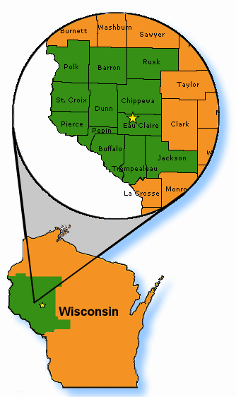
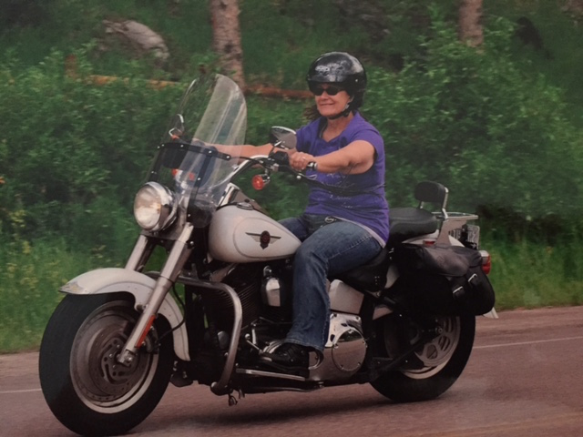
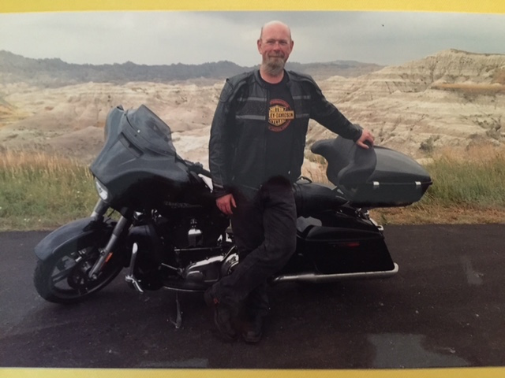

About United Cerbral Palsy of West Central Wisconsin
Background
United Cerebral Palsy of West Central Wisconsin (UCP) is a nonprofit
organization that advocates for the independence, productivity and
citizenship of people with disabilities and supports their full inclusion in
all aspects of life and the community. This is accomplished through the
provision of an array of programs and services that support and encourage
independence and inclusion for children and adults with neurodevelopment
disabilities, as well as programs to support children, adults and families
that contend with
these disabilities on a daily basis.

The Ride!
The 2016 Life Without Limits Ride 2 DC will be held from August 31-September
10, 2016, covering a total of 2,524 miles round trip and is designed as a
fundraiser for United Cerebral Palsy of West Central Wisconsin, as well as an
awareness ride for people with disabilities. The ride from Eau Claire,
Wisconsin to Washington, D.C. will include stops in
Madison, Wisconsin
, Springfield, Illinois,
Cincinnati,Ohio,
Johnstown, Pennsylvania,
and the National Office of United Cerebral Palsy in Washington, DC. The return
ride, though not including any formal stops will culminate in Chippewa Falls,
Wisconsin at the annual raffle drawing for UCP of West Central Wisconsin
Win-a-Harley event at Sport Motors
Harley-Davidson.
The Riders:
There will be three primary riders for this event;
Dr. David M. Piltz ,
Executive Director of United Cerebral Palsy of West Central Wisconsin,
Mary Kay Piltz, from Centerpoint
Energy (Dr. Piltz’s spouse) and personal friend and rider,
Tim Doffing from St. Jude Medical. In addition to their ties and
interests in people with disabilities, all are members of the St. Paul
Chapter of the Harley Owner’s Group.
In addition to the main three riders a fourth participant, whom will be
named at a later date, will drive a chase car for support in the event of an
emergancy and to carry extra suppilies.
Want to ride with?
For people interested in riding all, or portion, of the route with the three
primary riders may do so with a minimum flate rate donation of $75 per
segment(avg. 250 miles per day). In doing so the rider will be responsible
for any expenses they incur on that portion of the trip and would be
required to sign a release from the eliminate liability for UCP of West
Central Wisconsin and the riding team. Please contact Dr. Piltz at
dpiltz@ucpwcw.orgif you are
interested in riding along.
Dr. David M. Piltz(Doc)

Dr. Piltz has served as the Executive Director of United Cerebral Palsy
of West Central Wisconsin (UCP) since 2012 and has over 25 years
experience serving individuals with disabilities. Prior to his work with
UCP, Dr. Piltz was the Director of Organizational Development for
Accessible Space, Inc. (ASI), a national nonprofit headquartered in St.
Paul, Minnesota, involved in the development and operation of accessible,
affordable housing with supportive care services for individuals with
severe physical disabilities, traumatic brain injuries and frail elderly.
Dr. Piltz is a head injury survivor (NOT the result of a bike accident) and
has ridden motorcycles for over 45 years. In addition to his work at UCP,
Doc is the Director of the St. Paul Harley-Davidson HOG Chapter in St. Paul
Minnesota and has been a Road Captain with the Chapter for 7 years.
Mary Piltz

Mary Kay Piltz (MK) – Mary Kay has been employed by CenterPoint Energy for
over 30 years. Her current role is Technical Trainer. She has been riding
motorcycles for the past 9 years and has served as the Director of Ladies
of Harley and as a Road Captain for the St. Paul Harley-Davidson HOG
Chapter in St. Paul, Minnesota. As the wife of the Executive Director,
MK has supported Dr. Piltz in his fundraising activities throughout his
career path. She particularly enjoys working the Annual UCP Telethon every
January.
Timothy Doffing (Tim)

Tim Doffing is currently a Senior Network Engineer for St. Jude Medical, Inc. in St. Paul, Minnesota and has been with the company for over 8 years. Headquartered in St. Paul, Minnesota, St. Jude Medical is a global medical technology leader. For more information about St. Jude Medical, visit their home page.
Tim has enjoyed riding motorcycles for over 25 years. He serves as a Board member (Webmaster) and a Road Captain for St. Paul Harley-Davidson H.O.G. Chapter#2454. This year he also completed the grueling Iron Butt Association's Saddle Sore 1000 ride, completing a 1,000 mile ride in less than 24 hours.
We Need Your Support
None of this will be possible with the support of people like you. Small
donations from every day people just like you adds up quickly. Please help
us make a difference by contributing today.
Do you run a buisness and want to help support a great cause AND want to get
your name out there? Please consider becoming a sponsor. Contact
Dr.Piltz to find out how today!